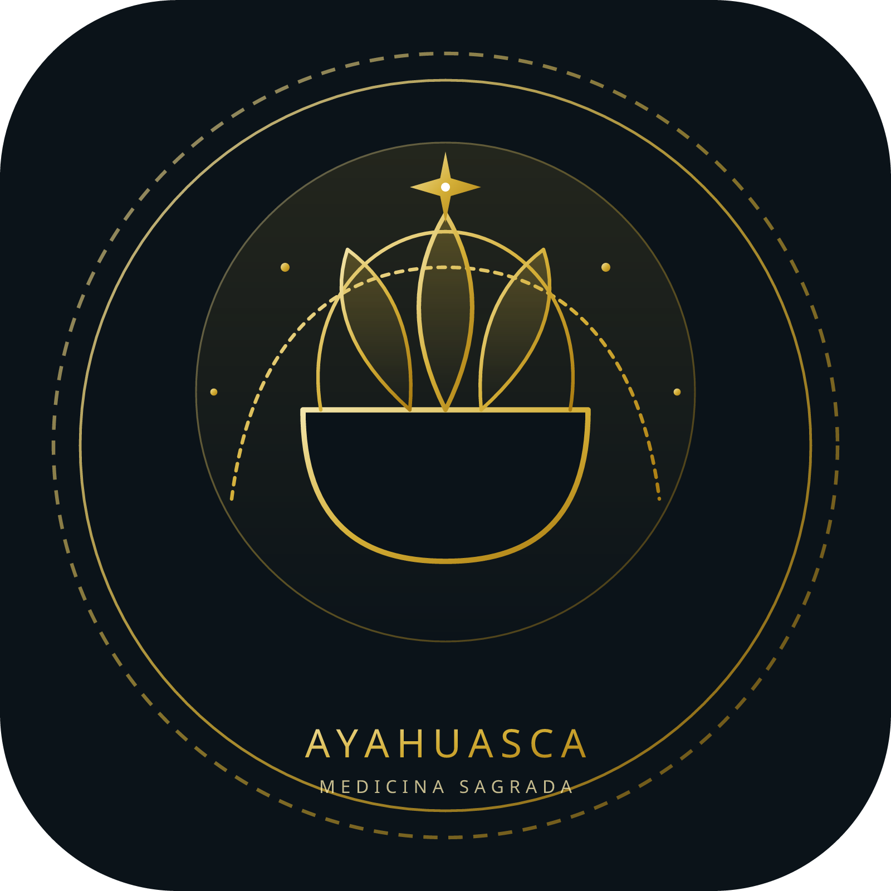

AYAHUASCA
Medicina de Visão, Cura e Conexão
Uma bebida sagrada que nos conduz ao encontro de nós mesmos, dos ancestrais e do mistério da vida.
Pilares da Ayahuasca
O Que É?
Uma bebida ancestral utilizada por diversos povos originários da Amazônia há séculos. É considerada uma medicina entheógena e sacramental, utilizada em contextos ritualísticos, espirituais e de autoconhecimento.
Do Que É Feita?
Preparada a partir da união de duas plantas mestres: o cipó Banisteriopsis caapi e as folhas de Psychotria viridis (ou outras plantas que contêm DMT), proporcionando visões e experiências profundas.
Como Age?
Atua principalmente no sistema nervoso e no campo energético, promovendo alterações na percepção, no estado de consciência e no funcionamento emocional, trazendo à tona o que precisa ser transformado.
Como é Consagrada?
As plantas são colhidas com respeito e a bebida é feita com orações e intenções positivas. Antes de ser oferecida, é consagrada através de rezas, defumações e cânticos ancestrais.
Para Que Serve?
Serve como ferramenta de cura, autoconhecimento, limpeza espiritual, fortalecimento da conexão com os guias e expansão da consciência. É um caminho potente de reconexão com a verdade da alma.
Como é Utilizada?
Utilizada em cerimônias conduzidas por facilitadores experientes e preparados. O espaço é seguro e protegido, guiado pela medicina, pelos cantos, orações e pela força do coletivo.
Lembre-se
A ayahuasca não é recreativa. É uma medicina sagrada que exige respeito, intenção, preparo e acompanhamento responsável.
"A ayahuasca nos ensina, nos cura e nos lembra quem somos. Que possamos honrar essa medicina e todos os seres da floresta."Sananga: A Medicina da Visão Espiritual
Colírio sagrado extraído de arbustos da Amazônia (*Tabernaemontana sananho*), tradicionalmente utilizado para afastar energias densas ("panema"), afinar a percepção visual e abrir caminhos para a clareza interna.
Benefícios Físicos
Auxilia no alívio de tensões oculares, melhora da acuidade visual e relaxamento profundo do sistema nervoso.
Dimensão Espiritual
Dissipa bloqueios energéticos acumulados, limpa o campo áurico e traz um estado de foco cristalino e aterramento.
Rapé Sagrado: A Força da Floresta no Alinhamento
Medicina ancestral em pó soprada diretamente nas narinas, composta por tabaco sagrado silvestre e cinzas de árvores medicinais. Um instrumento poderoso de foco e limpeza mental.
Ancoragem e Silêncio Mental
Interrompe o fluxo acelerado de pensamentos repetitivos, ancorando o indivíduo profundamente no momento presente.
Limpeza Energética
Atua diretamente nos chakras superiores, limpando o canal respiratório e equilibrando o fluxo de energia vital.